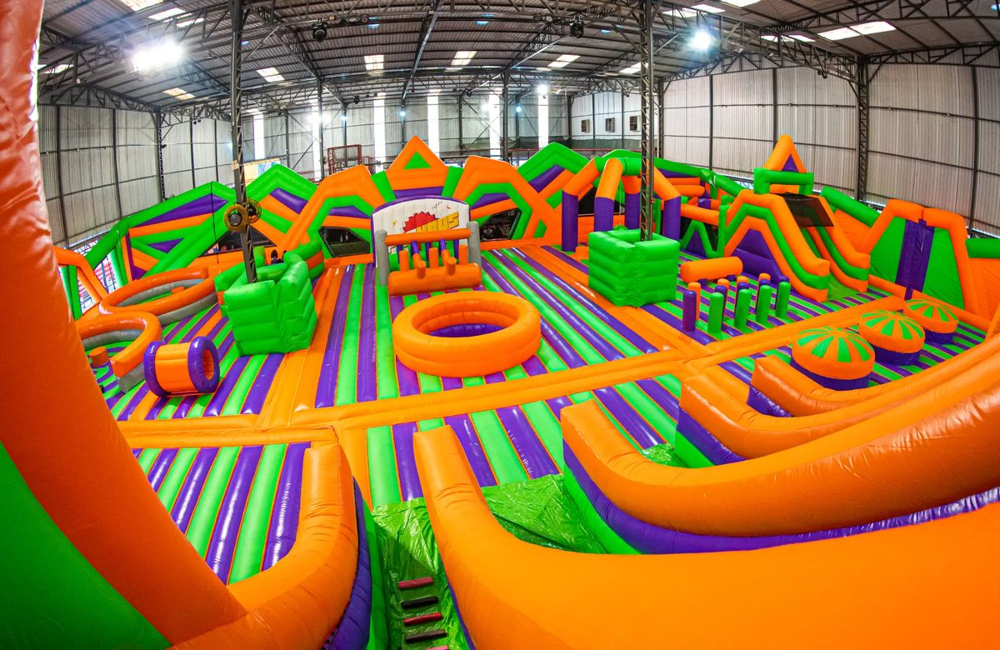
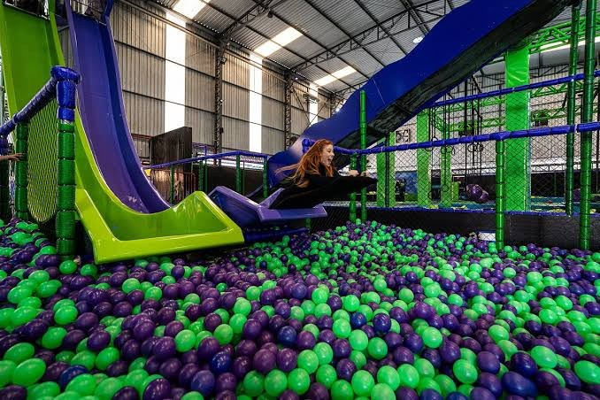
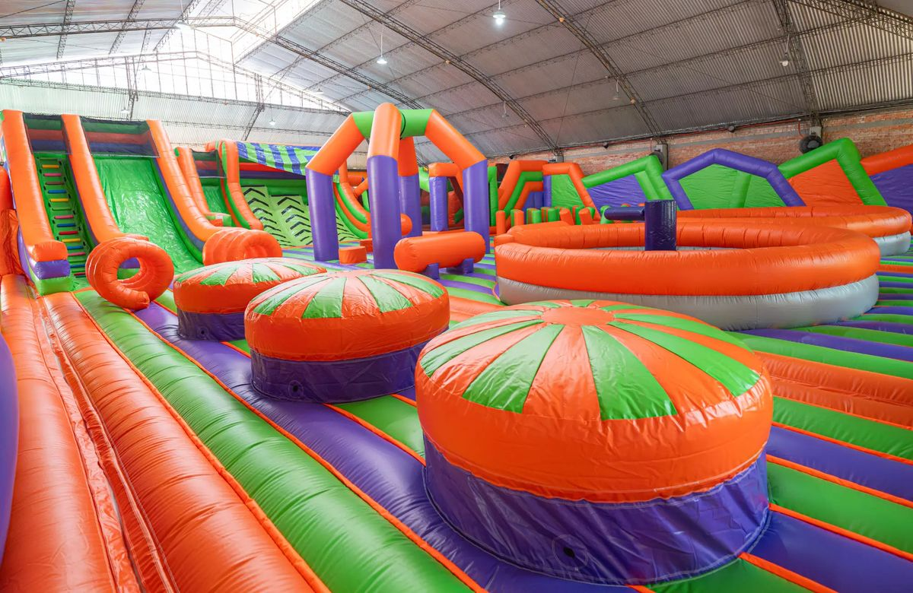
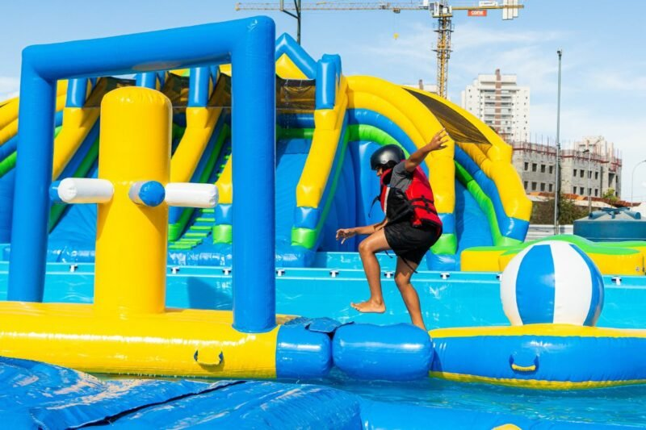
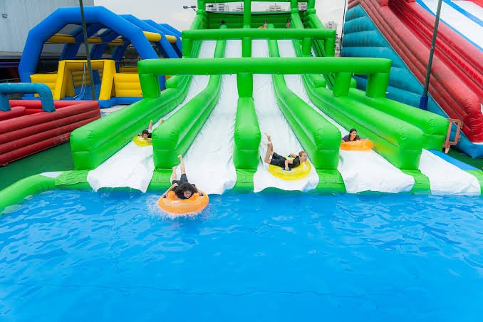

Cronograma do dia
Os horários são previstos e podem variar com o trânsito.
-
10h15
Concentração na Saint Mary's School
Alunos e professores se encontram na escola, em Santos, para a conferência e o embarque.
-
10h30
Embarque e saída da escola
Viagem de ônibus até São Paulo.
-
12h30
Chegada prevista ao Pop Haus Santo Amaro
Recepção e orientações do parque.
-
13h00
Início das brincadeiras
Brincadeiras nos parques Pop Indoor e Pop Outdoor.
-
18h00
Término das brincadeiras
Fim das atividades no parque.
-
18h30
Retorno para Santos
Saída do parque rumo a Santos.
-
20h30
Chegada prevista em Santos
Desembarque na Saint Mary's School.
O parque
O passeio inclui as duas áreas do Pop Haus: o Pop Indoor, com infláveis, trampolins e atrações de aventura, e o Pop Outdoor, com atrações de água ao ar livre.
Pop Indoor
Infláveis, trampolins (a partir de 3 anos) e atrações de aventura (a partir de 5 anos), como o escorregador Turbo Slide e a Super Escalada. Meias comuns e antiderrapantes são obrigatórias.



Atrações do Pop Indoor
- Turbo Slide
- Piscina de bolinhas
- Paredes de escalada
- Camas elásticas
- Circuito ninja
- Guerra de cotonetes
- Ponte de equilíbrio
Lista conforme a divulgação do parque. Algumas atrações têm limite de altura e de peso.
Pop Outdoor
Atrações com água ao ar livre. Leve uma troca de roupa.


Kit lanche
Cada aluno recebe um kit lanche durante o passeio.
O kit lanche inclui
- Suco
- Pacote de snack assado
- Bolinho
- Moranguete
- Balinhas
Quer levar um lanche extra?
A entrada de alimentos e bebidas no parque é parcialmente controlada. Quem quiser levar algo a mais precisa seguir as regras do Pop Haus:
- Alimentos industrializados (salgadinhos, snacks, bolachas) são permitidos em porções individuais, no máximo 2 unidades por pessoa, com a embalagem fechada.
- Frutas são permitidas in natura ou fatiadas, em embalagem flexível e transparente, no máximo 2 embalagens ou 2 fruteiras por pessoa.
- Papinhas e papas infantis são permitidas.
- Lanches caseiros, como sanduíches, não são permitidos, a menos que exista uma restrição alimentar que exija alimentação especial.
- São proibidos coolers, bolsas térmicas com mais de 2,5 litros, garrafas térmicas com mais de 1,5 litro, latas de alumínio, garrafas de vidro e potes de vidro.
O Pop Haus não se responsabiliza por problemas causados por alimentos e bebidas trazidos de fora.
O que levar
O parque tem regras próprias de vestuário. Marque o que já está pronto.
Para vestir
Dicas para os responsáveis
- Quem não tiver meias antiderrapantes pode comprar na recepção do parque.
- Avise a escola com antecedência sobre alergias e restrições alimentares.
- Se o aluno enjoa em viagens, avise os professores antes da saída.
- Deixe em casa objetos de valor, brinquedos e eletrônicos, que podem se perder durante as brincadeiras.
- O ônibus sai às 10h30. Chegue com alguns minutos de antecedência.
Regras do parque conforme o site do Pop Haus, que podem mudar. Siga também as orientações da Saint Mary's School.